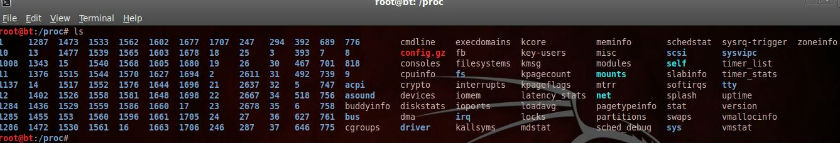
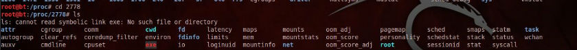

linux下面/proc是一个貌似普通但是功能却非常强大的目录硬件信息目录，包含核心的硬件信息，内存信息，系统运行进程信息，虽然对于用户来说里面的绝大部分内容都是只读的，但是内容还是会随着系统状态的不同而变化的。
root@bt:/# cd /proc
root@bt:/proc# ls

图中每一个数字目录都代表着当前运行的一个相应的进程，每个数字都是一个进程号:
root@bt:/proc# ps -ax #查看当前进程
root@bt:/proc# cd 2778 #进入进程2778的目录

/proc中另外那些非数字的系统信息文件每个都是有意义的，这里列出一些最重要的：
1、/proc/cpuinfo: CPU信息
2、/proc/memiinfo: 物理内存，交换空间等信息
3、/proc/mounts: 已加载的文件系统的列表
4、/proc/devices: 可用的设备列表
5、/proc/filesystems: 被支持的文件系统
6、/proc/modules: 已加载的模块
7、/proc/version: 内核版本
8、/proc/cmdline: 系统启动时输入的内核命令行参数
9、/proc/dma: 显示当前使用的DMA通道
10、/proc/interrupts: 显示使用的中断
11、/proc/imports: 当前使用的I/O端口
12、/proc/kmsg: 核心输出的消息
13、/proc/version: 内核版本信息
14、/proc/net: 网络协议状态信息